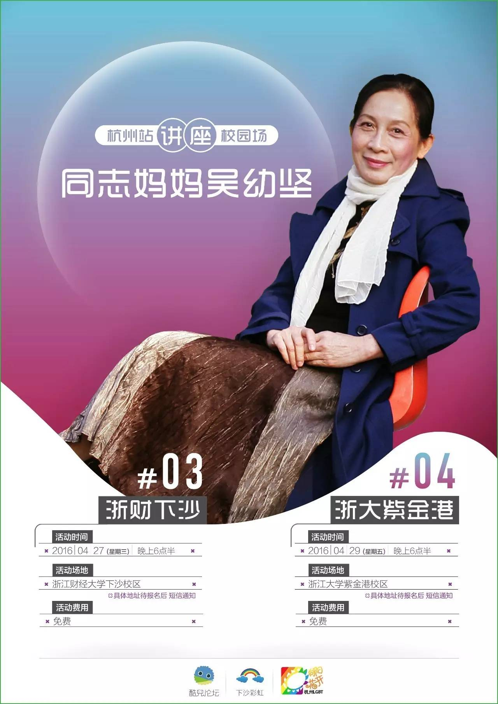
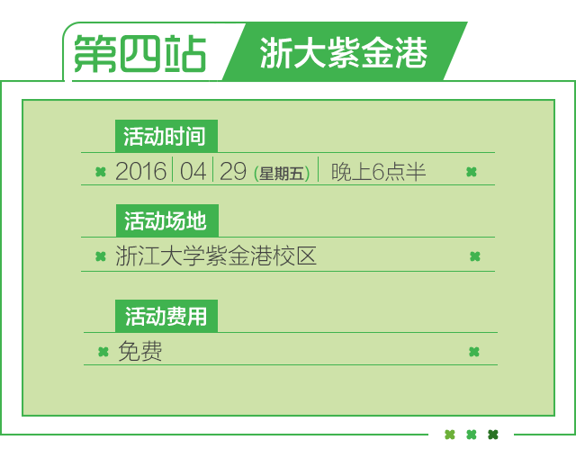

报名 | 同志妈妈吴幼坚浙大、浙财讲座

“出柜”、“艾滋”
希望各位同学不要错过这次机会！




吴幼坚（1947年生），中国首位公开支持同性恋儿子的母亲。2005年首次接受电视采访，2008年成立同性恋亲友会并任会长三年半。2012年以独立公益人身份为创建多元包容和谐社会奉献余热。接受中外媒体采访数百次，到院校、社区、企业等举办讲座数百场。是中国作家协会广东分会会员，发表报告文学、通讯、专访、小说、散文并获过奖。出版了个人影集《这一株三色堇》（1993）、纪实文学集《爱是最美的彩虹——一位母亲眼中的同志世界》（2010）、视频集《爱是最美的彩虹》（2012），均获好评。至2016年3月，个人博客访问量共计达1266万人次。大家也可以在百度上搜索到更多吴妈妈的介绍。




向阳花开·杭州LGBT
下沙彩虹